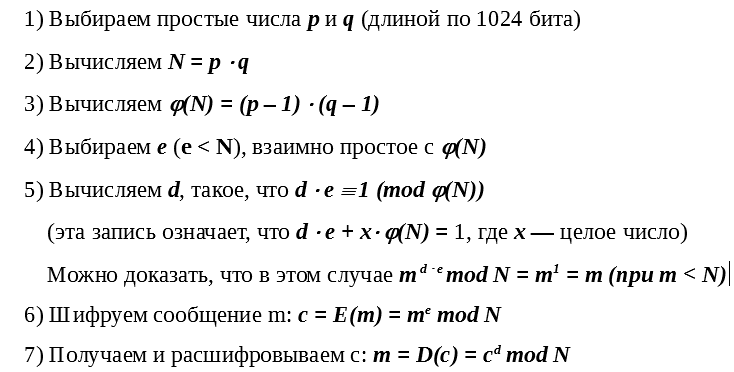

Какие числа нужно опубликовать, чтобы алгоритмом можно было воспользоваться?
Какие числа необходимо держать в строжайшем секрете?
Сколько десятичных цифр должно быть в простом числе длиной 1024 бита?
A. Алгоритм Евклида. Напишите программу, получающую на вход два натуральных числа и вычисляющую их НОД. Можно использовать рекурсию.
Подсказка: 1) НОД(a, b) = НОД(b, a - b) = НОД(b, r), где r = a % b (r = a - b * n, 0 < r < b)
2) Алгоритм Евклида позволяет быстро найти НОД двух чисел, последовательно вычисляя осттатки.
r1 = a % b
r2 = b % r1
r3 = r1 % r2
...
Когда нужно остановиться?
B. Расширенный алгоритм Евклида.
Напишите программу, которая получает на вход два взаимно простых числа a и b, и вычислякт корни уравнения ax + by = 1. Таких корней бесконечно много, пусть вычилит одну пару. В дальнейшем нам понадобится 0 < r < N.
Подсказка: 1) Мы легко найдём корни уравнения a * x1 + b * y1 = r1, где r1 = a % b
2) Зная х1 и у1, сможем найти корни уравнения a * x2 + b * y2 = r2, где r2 = b % r1
3) Так, двигаясь по алгоритму Евклида, дойдём до уравнения a * x + b * y = НОД(a, b) = 1
Мы не сможем пока получить достаточно большие простые числа.
Насколько большие простые числа можно получить обычными точными способами?
C. Решето Эратосфена. Напишите программу, вычисляющую простые числа методом вычёркивания. Для этого можно создать большой список, заполненный 1. Пусть его размер равен s. Индексы - это числа, про которые мы сможеи узнать, простые они или нет.
Будем "вычёркивать" (заменять на 0) все элементы, индексы которых не являются простыми. Сначала нудевой и первый элемент. 2 - простое число, поэтому значение второго элемента оставляем 1. Но все числа, кратные 2 - составные, элементы с такими индексами нужно заменить на 0.
Следующее простое число - индекс следующей 1 в нашем списке.
Теперь нужно "вычёркивать" из списка числа, кратные 3. С какого элемента следует начинать этот процесс, чтобы не делать лишнюю работу?
Пусть s = 100. Для какого простого числа нет смысла перебирать и "вычёркивать" все кратные ему числа, потому что они уже заведомо "вычеркнуты"?
Распечатайте все простые числа от 2 до 100. Проверьте, что программа работает правильно.
Отключите печать (она занимает много времени). Проверьте, какое максимальное простое число можно найти за время порядка минуты? (Напечатайте только это число).
Найдите с помощью своей программы три больших простых числа (p, q и e). Обратите внимание на то, что разность между этими числами тоже должна быть большой (того же порядка, что и сами числа).
D. Быстрое возведение в степень.